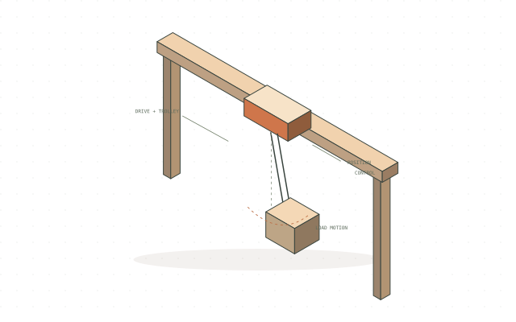

Industrial control / SEW-Eurodrive
Crane anti-sway & servo control
Crane anti-sway and radar servo-drive control, explored through modelling, controller design and drive configuration.

Concept illustration · not original project imagery
Project overview
Study suspended-load motion and servo-drive response for industrial motion-control applications.
Approach
- MATLAB and Python models for drive parameters and system response.
- P and PI controller design for servo-drive behaviour.
- Drive configuration and operator-interface development using MOVISUITE and MOVITOOLS.
Engineering focus
Motion control, industrial drives, system modelling and operator interfaces.